Primera propuesta
En la primera propuesta que hice, incluí un sistema de calificación por estrellas basado en el porcentaje de efectividad del profesor que se determina a partir de la relación entre el número de estudiantes que un profesor guió y los que lograron titularse. Cada estrella corresponde a un 20% de efectividad y media estrella equivale a un 10%. Esta propuesta también incluye dos gráficos por cada profesor, uno que muestra la cantidad de estudiantes guiados por año y el otro la cantidad de estudiantes que aprobaron en ese mismo período.
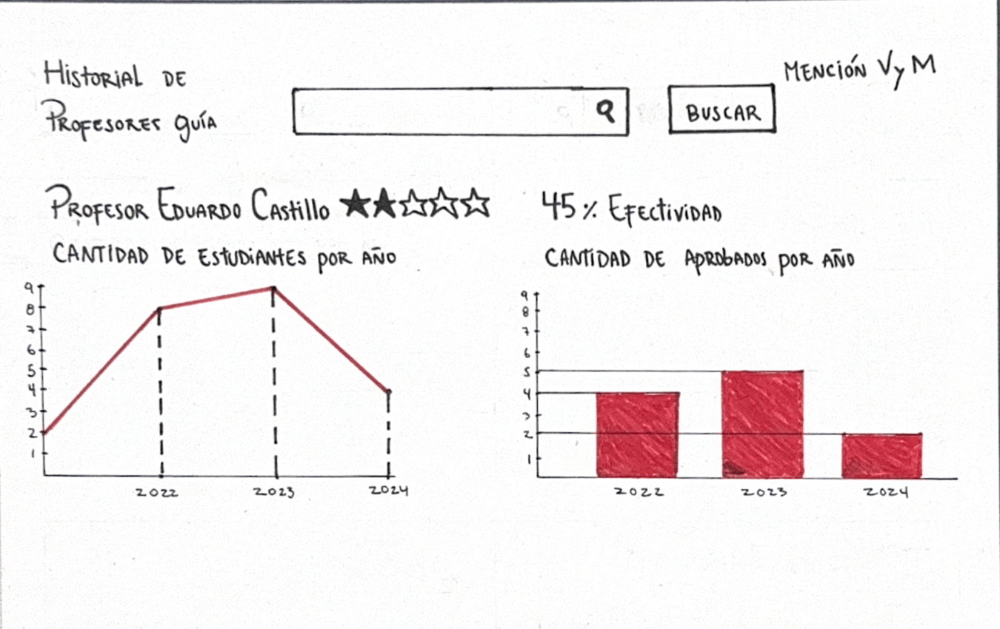
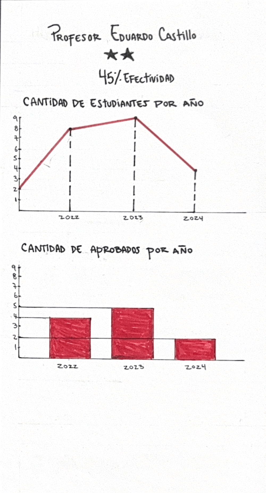
Segunda propuesta
En mi segunda propuesta presento una tabla que reúne a todos los profesores, junto con la cantidad de estudiantes que han guiado, su nivel de efectividad representado nuevamente representado por estrellas, el promedio de sus alumnos aprobados, y también el promedio general que considera tanto a los aprobados como a los reprobados.
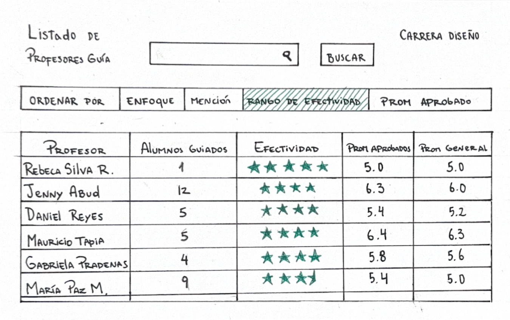
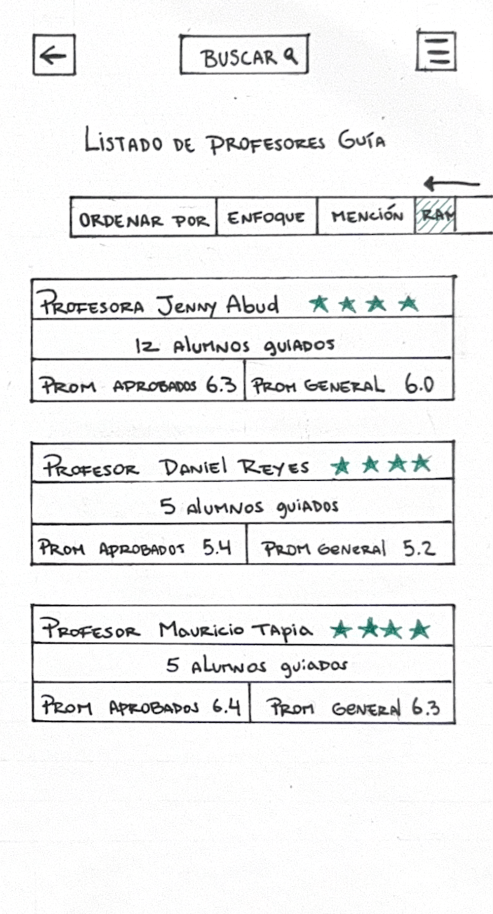
Tercera propuesta
Esta propuesta busca que los alumnos tengan una fuente solida de información a la hora de conocer a los profesores. Para ello, se plantea la creación de videos en los que cada docente pueda presentar sus especialidades, proyectos y enfoques de trabajo. Además, en cada video, se habilitará un espacio para que exalumnos que fueron guiados por ese profesor puedan dejar comentarios y compartir su experiencia.
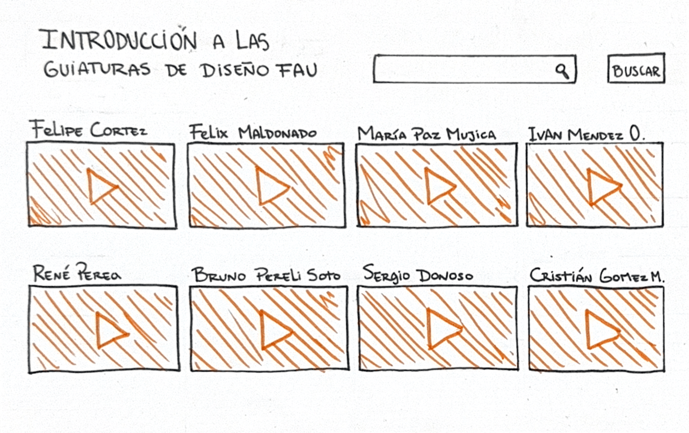
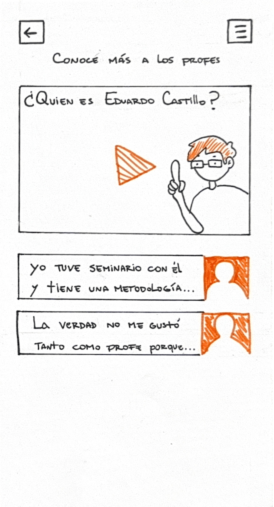
Cuarta propuesta
En esta propuesta decidí agregar un sistema de colores que representa la mención a la que pertenecen mayoritariamente los estudiantes guiados por cada profesor. El color azul identifica a quienes suelen guiar alumnos de la mención Visualidad y Medios; el rojo, a los de Industrial y Servicios; y el verde se asigna a los profesores que trabajan con estudiantes de diversas menciones, sin distinción.
Además, en el perfil de cada profesor, dentro de la lista con los proyectos de los estudiantes que han guiado, se agrega un apartado de correcciones. Este espacio permite visualizar tanto los aciertos como las falencias de cada proyecto.
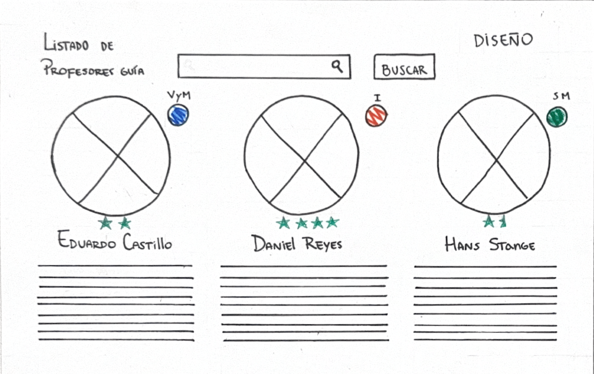
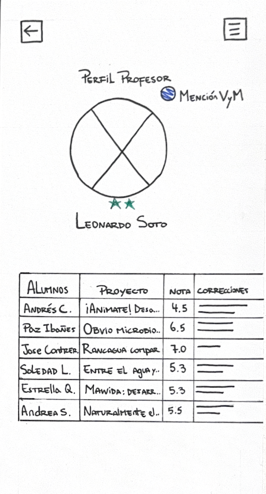
Quinta propuesta
Esta propuesta consiste en un test diseñado para que los estudiantes puedan identificar a los profesores que mejor se ajustan a sus preferencias. Al responder una serie de preguntas, los alumnos serán dirigidos a una sección de resultados donde podrán ver qué docentes presentan mayor nivel de compatibilidad con ellos.
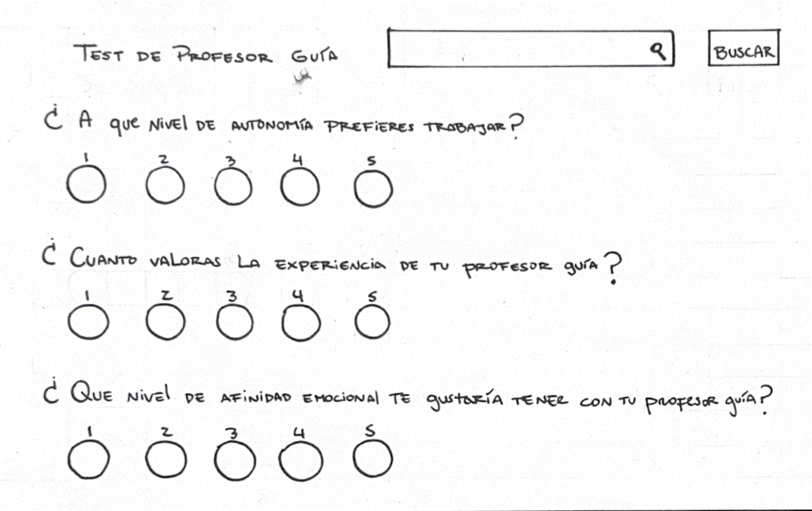
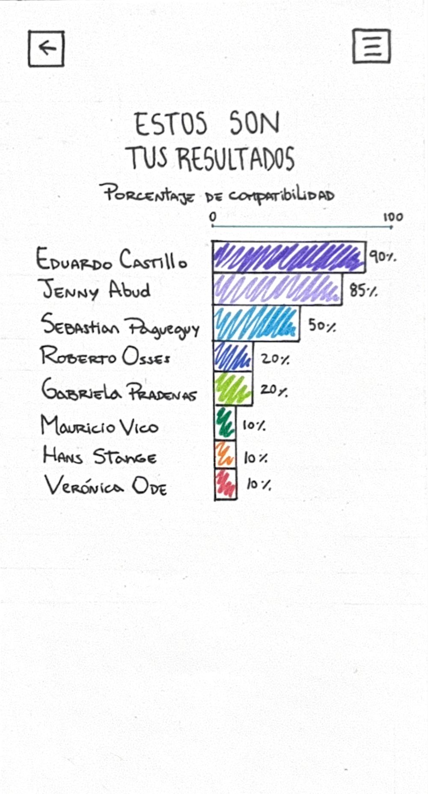
Sexta propuesta
En mi última propuesta incorporé un gráfico tipo radar, que podría formar parte del apartado de "Cursos", y que tiene como objetivo visualizar las cualidades principales de cada profesor. Los datos representados en este gráfico se construirían a partir de las respuestas obtenidas en encuestas docentes, enfocadas específicamente en evaluar estas cualidades.
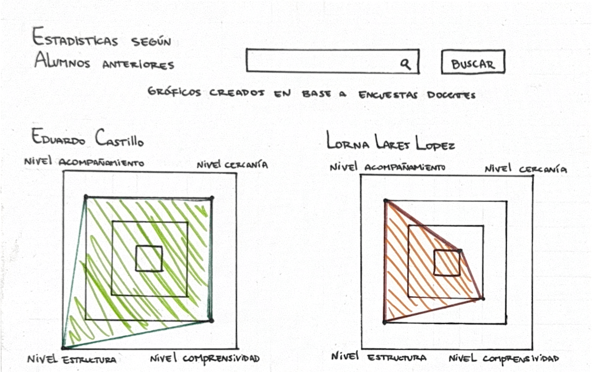
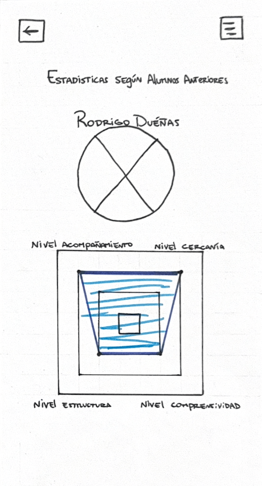